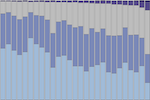
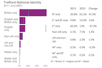

This page collates all the outputs we have produced containing data from the census conducted in 2021.
The census is a survey undertaken by the Office for National Statistics (ONS) that happens every 10 years and gives a picture of all the people and households in England and Wales. Census Day was on Sunday 21 March 2021 and Trafford's response rate for usual residents was 98%. You can find further information about the census 2021 from the ONS, including their proposed timeline for publishing the data.
Following each release we will be creating and updating our outputs concerning Trafford and publishing them here. Our glossary contains definitions of the commonly used terms.
Infographics


Reports
Education

Report detailing the highest level of educational attainment of Trafford's residents and analysis of the student and schoolchildren populations across the borough from the census 2021 education topic summary.
Housing
Analysis of the different types of accommodation, tenure, central heating methods and bedroom occupancy from the census 2021 housing topic summary release. Includes comparisons within Trafford and across similar local authorities, Greater Manchester and England.
Ethnicity, Identity, Language and Religion
This report analyses the data published regarding the ethnic group, national identity, language, and religion of residents from the 2021 census and compares it to similar data from the census in 2011.
UK Armed Forces Veterans
The 2021 census in England and Wales was the first to ask people if they had previously served in the UK armed forces. This report analyses the data for Trafford released in the UK armed forces veterans: Census 2021 in England and Wales topic summary, relating to those who previously served in the UK armed forces and excluding those who are currently serving.
Demography and Migration
Following the release of demography and migration data from the 2021 census, this report contains analysis of the change in Trafford's population and households from the previous census and provides comparisons with the other local authorities in Greater Manchester. Additionally for Trafford, analysis is also provided for international migration.
Data
Open datasets in CSV format. Data is provided at local authority level for the whole of Greater Manchester and then at smaller geographies for Trafford only.
Armed Forces Veterans
Classifying residents who have previously served in the UK armed forces. Data is provided by population and household.
Education
Highest level of qualification held by usual residents aged 16+, as well as the number of schoolchildren and full-time students.
Ethnicity
Classifying usual residents in England and Wales by ethnic group. Data is provided by population and household.
Health, disability, and unpaid care
Classifying usual residents in England and Wales by health, disability, and unpaid care.
Housing
Residents and households data based on accommodation type, tenure, rooms and bedrooms, central heating, car or van availability and second addresses.
Labour Market & Travel to Work
Classifying usual residents in England and Wales relating to the labour market and travel to work.
Language
Classifying usual residents in England and Wales by languages spoken. Data is provided by population and household.
National Identity
Classifying usual residents in England and Wales by national identity. Data is provided by population.
Population & Households
Population estimates by sex and single year of age, population densities, household size and household composition.
Religious Affiliation
Classifying usual residents in England and Wales by religious affiliation. Data is provided by population and household.
Sexual orientation & gender identity
Classifying usual residents by their self-reported sexual orientation and by their gender identity.
ONS Publications
Information and resources published by the Office for National Statistics.
-
Phase 2: Sexual orientation and gender identity Census 2021 pre-built flexible datasets.
Flexible datasets where you can choose and change the area type and coverage of Census 2021 sexual orientation and gender identity data combined with other variables. Please read the ONS Blog for further information on the latest release and how it should be used. -
Phase 2: Create a custom dataset tool.
Also known as the flexible table builder, allows you to create your own Census 2021 datasets. There are also pre-built flexible datasets which you can customise with additional variables. -
Census Maps: view ten-year change from 2011 to 2021.
Interactive tool to explore Census 2021 data across England and Wales for different topics, including how areas have changed between the censuses in 2011 and 2021. -
Phase 1: Health, disability, and unpaid care.
Additional resources: Health, disability and unpaid care quality information for Census 2021. -
Build a custom area profile.
Create profiles for local areas in England and Wales using Census 2021 data. Help on how to use the tool can be found in the blog on ONS Digital. -
Phase 1: Education.
Additional resources: Education quality information for Census 2021. -
Phase 1: Sexual orientation and gender identity.
Additional resources: Sexual orientation and gender identity quality information for Census 2021. -
Phase 1: Housing.
Additional resources: Quality information affecting housing data (help to correctly interpret the statistics). -
Phase 1: Labour market and travel to work.
Additional resources: Labour market quality information for Census 2021. -
Phase 1: Ethnic group, national identity, language, and religion.
Additional resources: How your area has changed in 10 years: Census 2021. -
Phase 1: UK Armed Forces Veterans.
Additional resources: Datasets. -
Phase 1: Demography and Migration.
Additional resources: Datasets, Interactive census maps. -
Phase 1: Census 2021 first results.
Additional resources: Datasets, Trafford's population change since 2011 (interactive report).
Notes
- Within the outputs provided, the variable name "sex" refers to the assignment at birth based upon an individual's biological aspects, and "gender" refers to an individual's personal, internal perception of themselves (ONS: What is the difference between sex and gender?). Further information is provided by the ONS in: Sex and gender identity question development for Census 2021
- Population and household estimates from the Census 2021 first results release are rounded to the nearest 100, therefore discrepancies can occur e.g. between the sum of population by age bands and the total population figure. All further releases contain unrounded data